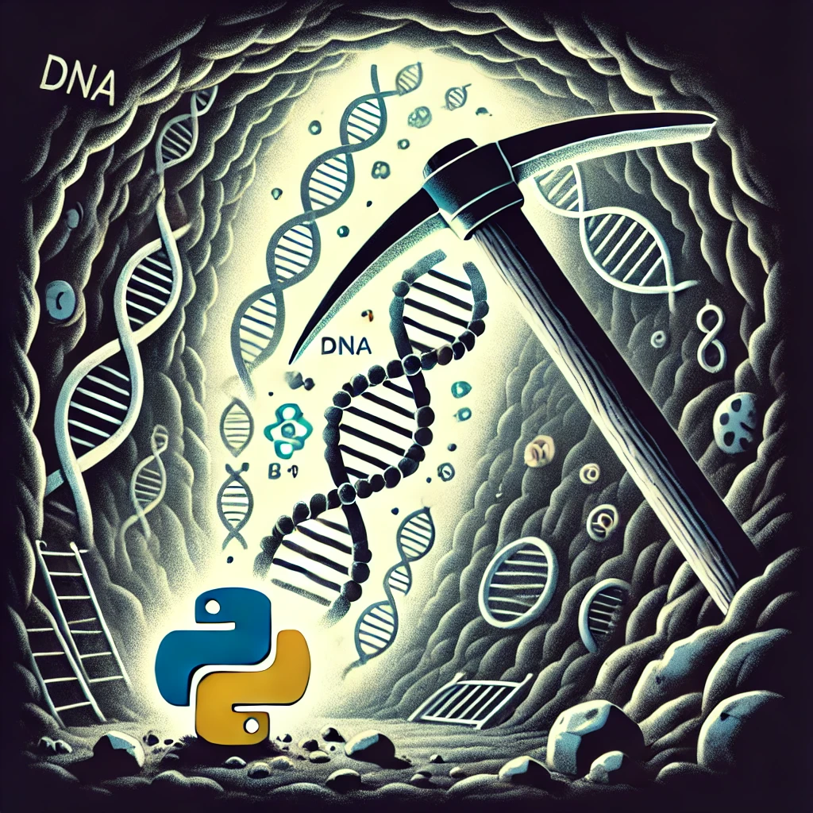

housekeepingMinerPy 
Contents:
housekeepingMinerPy
sourcecode
housekeepingMinerPy
Index
Index
B
|
C
|
E
|
F
|
G
|
H
|
L
|
M
|
P
|
S
|
T
|
U
B
balance_resample() (in module housekeepingMinerPy.mining)
boruta_selection() (in module housekeepingMinerPy.mining)
C
create_groups() (in module housekeepingMinerPy.pp)
E
exprs_cv() (in module housekeepingMinerPy.mining)
F
fit() (housekeepingMinerPy.pp.MRN_transformer method)
(housekeepingMinerPy.pp.TMM_transformer method)
G
gene_gini_coeff() (in module housekeepingMinerPy.mining)
H
hkg_selection_ga() (in module housekeepingMinerPy.mining)
housekeepingMinerPy.mining
module
housekeepingMinerPy.plot
module
housekeepingMinerPy.pp
module
L
log_transform() (in module housekeepingMinerPy.pp)
M
module
housekeepingMinerPy.mining
housekeepingMinerPy.plot
housekeepingMinerPy.pp
mrn() (in module housekeepingMinerPy.pp)
mrn_norm_factors() (in module housekeepingMinerPy.pp)
MRN_transformer (class in housekeepingMinerPy.pp)
P
plot_corr() (in module housekeepingMinerPy.plot)
plot_stb_cv_gini() (in module housekeepingMinerPy.plot)
pooled_tost() (in module housekeepingMinerPy.mining)
S
sclustering_cv_stb_gini() (in module housekeepingMinerPy.mining)
set_balance_resample() (in module housekeepingMinerPy.mining)
set_boruta_selection() (in module housekeepingMinerPy.mining)
stability_cv() (in module housekeepingMinerPy.mining)
T
tmm() (in module housekeepingMinerPy.pp)
tmm_norm_factors() (in module housekeepingMinerPy.pp)
TMM_transformer (class in housekeepingMinerPy.pp)
tost() (in module housekeepingMinerPy.mining)
transform() (housekeepingMinerPy.pp.MRN_transformer method)
(housekeepingMinerPy.pp.TMM_transformer method)
transform_exprs() (in module housekeepingMinerPy.pp)
transform_exprs_Microarray() (in module housekeepingMinerPy.pp)
transform_exprs_RNAseq() (in module housekeepingMinerPy.pp)
U
uclustering_cv_stb_gini() (in module housekeepingMinerPy.mining)